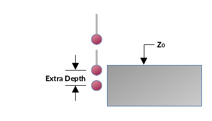
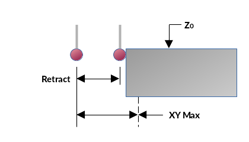
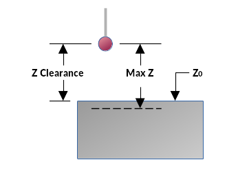
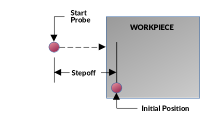
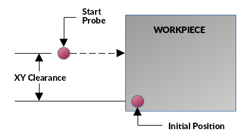
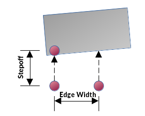
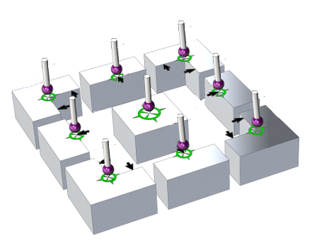

Index
- Extra Probe Depth
- Max XY Distance
- Retract
- Max Z Distance
- Z Clearance
- Stepoff Distance
- XY Clearance
- Edge Width
- Start and End Positions
- Tool Length Offsets
EXTRA PROBE DEPTH
The Extra Depth feature is used for adding additional depth the the probing routine past the predefined probing depth, as set by the probe tool diameter in the tool table. This is useful for avoiding chamfers, radii, rough edges or other abnormalities near the edge of the workpiece to be probed. Caution should be exercised not to exceed the depth available between the desired probe depth and the main probe body and the workpiece surface as this will result in a crash.

MAX XY DISTANCE
Max XY Distance is the distance the probe will move before stopping with an error unless it is triggered by contacting an object.
The distance between the probe starting position and the workpiece should be less than the Max XY Distance when probing in the X and Y directions in order to be within the travel range.
RETRACT
Retract is the distance the probe backs off from the workpiece after making contact. It will then either continue with the slow probe movement or come to rest or return to the top of the workpiece to the probe Z0 position or Z Clearance position, depending on the probing routine that was selected.

MAX Z DISTANCE
Max Z Distance is the distance the probe will move before stopping with an error unless triggered by contacting an object.
The distance between the probe starting position and the workpiece must be less than the Max Z Distance when probing in the Z direction in order to be within the travel range.
Z CLEARANCE
The Z Clearance is the height above the workpiece at which the probe will traverse during subsequent probing positioning moves. Caution should be used when setting so as to avoid work holding fixtures, clamps or other obstructions.

STEPOFF DISTANCE
Stepoff is the distance the probe will travel from the start position before moving down to probe the side of the workpiece. The distance entered must be greater than the distance between the probe in the start position and the edge of the workpiece. If the probe is obstructed by the workpiece surface during it's Z down positioning, an error will be triggered.

XY CLEARANCE
When probing inside or outside corners, this is the distance perpendicular to the edge probe direction. This is to clear a corner radius or other feature that might otherwise result in an incorrect corner location. This value combined with the Stepoff value will result in diagonal moves between probe operations. When moving from one side of the corner to the other, the spindle is first raised to the Z Clearance height.

EDGE WIDTH
When probing a skewed edge, this is the distance between the edge probe cycles, whether they are verical or horizontal. This distance is used in the calculation of the skew angle, so the greater it can be made, the more accurate the skew angle calculation will be.

Probe Start and End Positions
This is a 3d representation of probe starting and finishing points of inside probing. The probe starting placement is approximately on the intersection of edges. The green cross-hair is the finishing position after probing.

TOOL LENGTH OFFSETS
Tool length offset (TLO) can be done by manually measuring each tool and entering that value into the tool table or by using the Basic Probe Tool Measure utility. With this method, an electronic tool sensor must be used.
The basic principle of this utility is that each tool has a length relative to a reference tool. The reference tool could be the spindle nose, or some other tool, so long as it is the shortest tool. Probe distances are measured from the Z axis homed position in machine coordinates. The sequence of steps to measure tool offsets are as follows:
- Select TOOL MEASURE from the probe routines selector.
- Position the spindle at the tool sensor location and move Z up to Z0 in machine coordinates (G53)
- Load the spindle with the reference tool or use the spindle with no tool installed.
- Enter that tool number into the REFERENCE TOOL field and press Return.
- Press MEASURE TOOL and select the tool corresponding to the reference tool from the Tool Chooser dialog.
- Once the Probe signal is triggered, the refence value is entered into the tool measure diagram.
- Now insert a tool to be measured and press MEASURE TOOL again.
- Once the probe signal is triggered, the tool length offset is calculated and entered into the tool table.
- ** Once all the tools have been measured, do not change the REFERENCE TOOL or all the tools will have to be measured again. The tool offsets are based on the offset of the reference tool.
NOTE : This procedure will result in positive numbers for tool length offsets because it is calculated by subtracting the distance the measured tool travelled from the distance the reference tool travelled. This is the safest way because if tool offsets are inadvertantly applied with G43, the Z0 plane raises by that amount instead of lowering. If the spindle is then directed to travel to Z0, it could dive into the workpiece or the machine table. This also assumes that the Z axis homed position is at the top end of spindle travel.
⇧